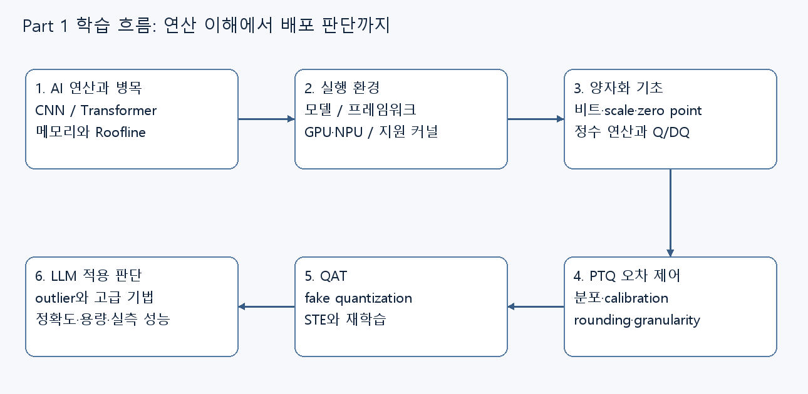

On-device AI: 장치의 제약에서 양자화까지
모델의 연산과 메모리 병목을 이해하고, 실행 환경과 양자화의 원리, PTQ·QAT, LLM 양자화의 적용 판단으로 연결하는 웹 교안입니다. 현재 Part 1의 6개 장과 부록, 양자화 실무 가이드를 제공합니다.
학습 목표
- 가중치·활성값·KV cache의 저장량과 연산 병목을 구분합니다.
- 목표 장치의 실행 환경과 저정밀 커널 지원 조건을 확인합니다.
- Scale과 zero point, clipping과 rounding이 양자화 오차에 미치는 영향을 설명합니다.
- PTQ·QAT·고급 LLM 양자화 방법의 목적과 선택 조건을 비교합니다.
- 품질·메모리·지연시간을 함께 고려한 배포 검증 계획을 세웁니다.
권장 학습 순서
벡터·행렬의 곱, bit와 byte, Python 배열 표기를 알고 있다고 가정합니다. 처음 읽을 때는 1장 → 6장 순서로 이동하세요. 이후 부록의 개념 연결표와 선택 시나리오로 복습하고, 실무 가이드에서 적용 조건을 비교하세요.
| 순서 | 교안 | 배우는 내용 |
|---|---|---|
| 01 | AI 연산과 성능 | 모델 연산, Roofline, 메모리 예산 |
| 02 | 실행 환경 | 런타임, 모델 형식과 장치 조건 |
| 03 | 양자화 기초 | 수 표현, scale과 zero point |
| 04 | PTQ와 비균일 양자화 | 보정, clipping과 rounding, 오차 제어 |
| 05 | QAT와 정수 추론 | Fake quantization, STE, 정수 추론 |
| 06 | 고급 LLM 양자화 | Outlier, GPTQ·AWQ·QLoRA와 적용 판단 |
| 복습 | 부록 | 개념 연결, 종합 선택 시나리오와 복습 |
| 적용 | 실무 의사결정 가이드 | 배포 조건에서 실제 커널 검증까지 |
전체 학습 흐름

성능과 실행 조건을 먼저 정하고, 양자화로 표현을 바꾼 뒤, 실제 장치에서 품질과 성능을 확인합니다. 각 장의 작은 계산과 확인 질문에 직접 답해 보세요.
원본과 제공 범위
- Part 1 원본 PDF: 80쪽, 위 6개 장의 기준 교안입니다.
- Part 2 원본 PDF: 원본만 제공합니다. Part 2 웹 해설은 준비 중입니다.
기준 본문은 기존 Markdown입니다. 중복 통합본과 제작·품질 관리 문서는 강의 목차에서 제외했습니다. 이번 작업은 웹 읽기 화면의 변환과 탐색을 구성하며, 원문의 기술 주장이나 코드 실행 결과를 새로 검증한 것은 아닙니다. 제품·장치 목록은 원본의 사례이며 최신 지원 현황을 보장하지 않습니다.
읽기 화면 사용법
강의 목차에서 장을 선택하고, 본문의 ‘이 문서의 목차’를 펼쳐 절로 이동하세요. 장별 주소는 공유하거나 새로고침할 수 있습니다. 넓게 읽거나 인쇄하려면 ‘본문만 새 탭에서 열기’를 사용하세요. 개별 문서를 직접 열었을 때에도 전체 과정과 강의 목차로 돌아갈 수 있습니다.
수식은 MathJax, 도표는 Mermaid의 온라인 렌더러를 사용합니다. 외부 연결이 제한되면 수식 텍스트, ‘도표 원문 보기’와 Markdown 원문을 확인하세요. 실무 가이드의 누락 지도 링크는 같은 제목과 내용이 확인된 Part 1 원본 p.29 이미지로 연결했습니다.
기준 본문은 기존 Markdown입니다. 수식·도표는 온라인 렌더러를 사용하며, 원문과 도표 원문으로도 확인할 수 있습니다.